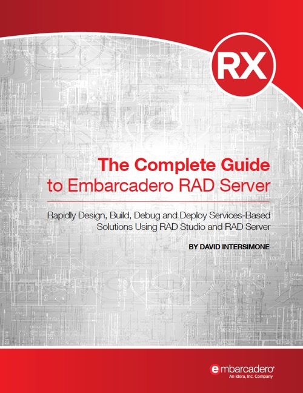

The Complete Guide to RAD Server
Published by : Embarcadero
Writed by : David I.
Published date : 07/05/2019
Language :  English
English
About The Complete Guide to RAD Server
While Embarcadero keeps adding features to RAD Server (more to come soon) we have made some additional effort to help developers better understand how to use RAD Server for hosting REST APIs and building a modern web service architecture.
We have asked David I to help and he delivered for us an in-depth 200 pages e-book covering RAD Server development and deployment. It is available for free to customers of the Enterprise and Architect editions of Delphi and C++Builder, or RAD Studio.
Where to buy ?
If this book is still available for sale, you probably can order it on its website.
Table of content
Chapter 1: Introduction..................................................................................................................................6
What You’ll Learn.....................................................................................................................................6
RAD Server Overview...............................................................................................................................6
Building RAD Server based applications – Seven Key Aspects...............................................................8
Requirements for Building RAD Server Applications..............................................................................9
Using the RAD Studio IDE..................................................................................................................9
RAD Server Testing and Deployment Licenses...................................................................................9
FireDAC Supported Databases.............................................................................................................9
Deployment Platforms Supported.......................................................................................................10
Web Servers Supported for Deployment............................................................................................10
See Also...................................................................................................................................................10
Chapter 2: Roundup of Core RAD Server Features.....................................................................................12
Core Features...........................................................................................................................................12
Features Highlighted in the RAD Studio Feature Matrix........................................................................13
See Also...................................................................................................................................................14
Chapter 3: Building Your First RAD Server Applications...........................................................................16
Building REST-Based Services...............................................................................................................16
Using the RAD Server Project Wizard...............................................................................................17
The Wizard Generated RAD Server Project and Source Code...........................................................20
Configuring RAD Server for your first Application................................................................................24
Testing your first RAD Server Application.............................................................................................29
Using the RAD Server Development Console........................................................................................33
Using the RAD Server Console Ext JS Based UI...................................................................................36
Using REST Debugger to Test RAD Server Applications......................................................................39
Enhancing the RAD Server App with FireDAC and InterBase...............................................................40
Create Client applications for the RAD Server application....................................................................44
See Also...................................................................................................................................................46
Chapter 4: RAD Server Configuration File Explained................................................................................48
Main Sections of the Configuration File.................................................................................................48
Database Configuration [Data]...........................................................................................................49
Authentication Configuration [Server.Keys]......................................................................................50
Developer Server Connection [Server.Connection.Dev]....................................................................50
API Cross-Domain [Server.APICrossDomain]..................................................................................51
Thread Management [Server.Threads.Dev]........................................................................................51
Console Login [Console.Login].........................................................................................................52
Console Cookie Settings [Console.Cookies]......................................................................................52
Console Display Options [Console.DisplayOptions].........................................................................52
Console Development Server Settings [Console.Connection.Dev]....................................................52
Console Browser Settings [Console.Browser]....................................................................................53
Console Development Paths Settings [Console.Paths.Dev]...............................................................53
Console ISAPI Paths Settings [Console.Paths.ISAPI].......................................................................53
Console Apache Paths Settings [Console.Paths.Apache]...................................................................53
Configuration Section for Extension Packages [Server.Packages].....................................................53
Google Cloud Messaging [Server.Push.GCM]...................................................................................54
Apple Push Notification Service [Server.Push.APNS].......................................................................54
Server Authorization Configuration Section [Server.Authorization].................................................54
Custom Resource Redirects [Server.Redirect]....................................................................................55
Proxy Setup for Edge Module Requests [Server.EdgeHTTP]............................................................56
Single/Multi Tenancy [Server.Tenants]...............................................................................................56
Specifying root paths [Server.Roots]..................................................................................................56
File Dispatching Support [Server.PublicPaths]..................................................................................57
See Also...................................................................................................................................................58
Chapter 5: Deploying a RAD Server Application to Windows and IIS.......................................................59
Step 1: Install InterBase 2017 with your RAD Server License...............................................................59
Step 2: Install IIS.....................................................................................................................................65
Step 3: Create New Sites for RAD Server Engine and RAD Server Console.........................................68
Step 4: Configure the EMSServer.ini file for the RAD Server Console.................................................70
Step 5: Configuring IIS 7 for RAD Server ISAPI DLLs.........................................................................70
Step 6: Enable ISAPI Modules................................................................................................................75
Step 7: Enable 32 bits ISAPI DLL on IIS 7 x64......................................................................................77
Step 8: Configure IIS to Allow Cross Domain Requests.........................................................................77
Step 9: Copy RAD Server application(s) and supporting files to the IIS production server...................77
Step 10: Test RAD Server on the Windows Production Server...............................................................79
See Also...................................................................................................................................................81
Chapter 6: Deploying a RAD Server application on Linux Apache............................................................83
Prerequisites.............................................................................................................................................83
Install InterBase 2017 for Linux..............................................................................................................84
Starting InterBase on Linux................................................................................................................87
Running InterBase as a Service..........................................................................................................88
RAD Server files for Linux support........................................................................................................89
RAD Server Stand-alone Installation......................................................................................................90
Setting Up RAD Server for Apache........................................................................................................95
Red Hat and related non-Debian distributions of Linux.....................................................................95
Ubuntu and similar Debian distributions of Linux.............................................................................96
Final Apache Server Setup and Restart...................................................................................................96
Test RAD Server Running on Apache.....................................................................................................97
Apache is Ready for your RAD Server Packages...................................................................................97
See Also...................................................................................................................................................98
Chapter 7: Mapping Web Properties to Folders.........................................................................................100
A Simple Example.................................................................................................................................100
See Also.................................................................................................................................................105
Chapter 8: Returning JSON using JSONValue and JSONWriter...............................................................106
Two Frameworks for Handling JSON Data..........................................................................................106
Using JSONValue..................................................................................................................................106
RAD Server App using JSONValue classes.....................................................................................107
VCL Client App using JSONValue classes.......................................................................................109
Using JSONWriter.................................................................................................................................111
A Simple JSONWriter Example........................................................................................................111
Using JSONWriter with a SQL Query..............................................................................................112
See Also.................................................................................................................................................118
Chapter 9: Using FireDAC Batch Move and JSONWriter.........................................................................119
Returning JSON Database Data Using a Memory Stream....................................................................119
Using FireDAC’s BatchMove, BatchMoveDataSetReader and BatchMoveJSONWriter.....................122
See Also.................................................................................................................................................126
Chapter 10: Mapping Endpoints to Custom Method Names.....................................................................127
Adding EndPointMethod Attributes......................................................................................................127
Test the RAD Server Application..........................................................................................................129
See Also.................................................................................................................................................130
Chapter 11: Mapping Endpoints to External Classes.................................................................................131
Create the RAD Server package application.........................................................................................131
Test the RAD Server application...........................................................................................................134
See Also.................................................................................................................................................136
Chapter 12: Multiple Accept Types with EndpointProduce.......................................................................137
A Simple Example.................................................................................................................................137
RAD Server Executes Methods Based on Accept Headers...................................................................139
See Also.................................................................................................................................................143
Chapter 13: Using the EMSFileResource Component...............................................................................144
Create RAD Server application package...............................................................................................144
Compile and Run the Application.........................................................................................................146
See Also.................................................................................................................................................148
Chapter 14: Using the EMSDataSetResource Component........................................................................149
Test the RAD Server application...........................................................................................................152
Create VCL client application using the EMSDataSetResource endpoint functionality.......................154
See Also.................................................................................................................................................157
Chapter 15: Putting it all together – Building a JavaScript client using Sencha Ext JS............................158
Build an Employee Data RAD Server Application...............................................................................158
Build and Test an EXT JS web client application using Sencha Architect............................................159
Step 1: Create and Preview the JavaScript Web Client App.............................................................160
Step 2: Test the Web Client’s Connection to RAD Server................................................................168
Step 3: Setting up JSON Employee Data Object and Data Model...................................................169
Step 4: Update the Web Client UI and Test the Final App................................................................174
See Also.................................................................................................................................................179
Chapter 16: Putting It All Together – Sample Walk Throughs...................................................................181
RAD Server Samples.............................................................................................................................181
FireDACResource.................................................................................................................................181
APIDocAttributes..................................................................................................................................184
ActiveDirectoryConsole...................................................................................................................186
RAD Server Solution Series application templates...............................................................................188
RAD Server Solution Series: Restaurant Survey Application..........................................................189
RAD Server Solution Series: Field Service Application..................................................................189
RAD Server Solution Series: Nurses Station Solution.....................................................................190
See Also.................................................................................................................................................190
Chapter 17: Summary.................................................................................................................................191
Sample Projects.....................................................................................................................................191
Acknowledgments.................................................................................................................................191
Additional Resources.................................................................................................................................192
DocWiki Help and What’s New............................................................................................................192
Embarcadero Developer Community Blog Posts..................................................................................192
RAD in Action: RAD Server by Cary Jensen........................................................................................193
RAD Server Videos...............................................................................................................................193
Product Videos and Webinar Replays...............................................................................................193
RAD Server Field Service Application.............................................................................................194
RAD Server Application Deep Dive.................................................................................................195
RAD Studio Linux Development.....................................................................................................195